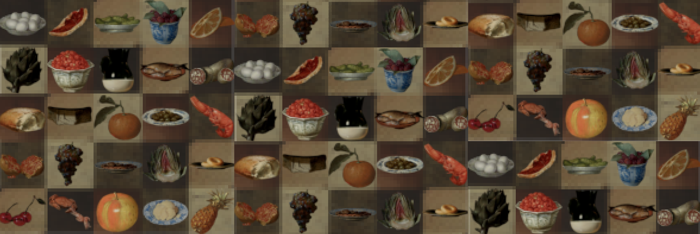
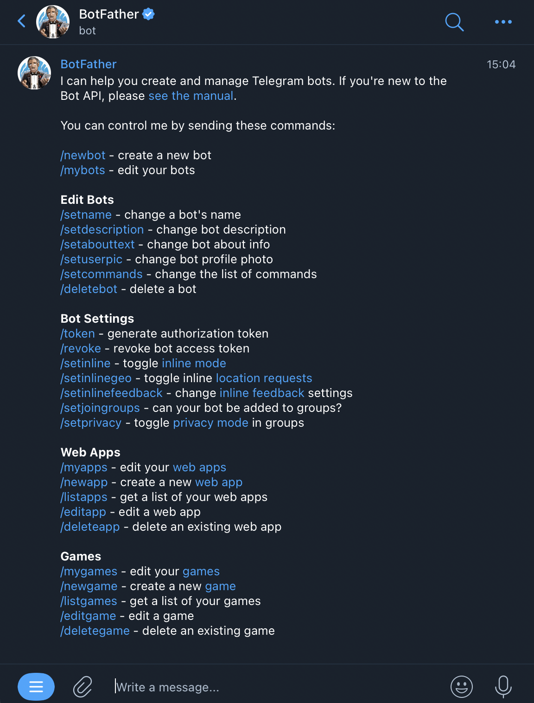
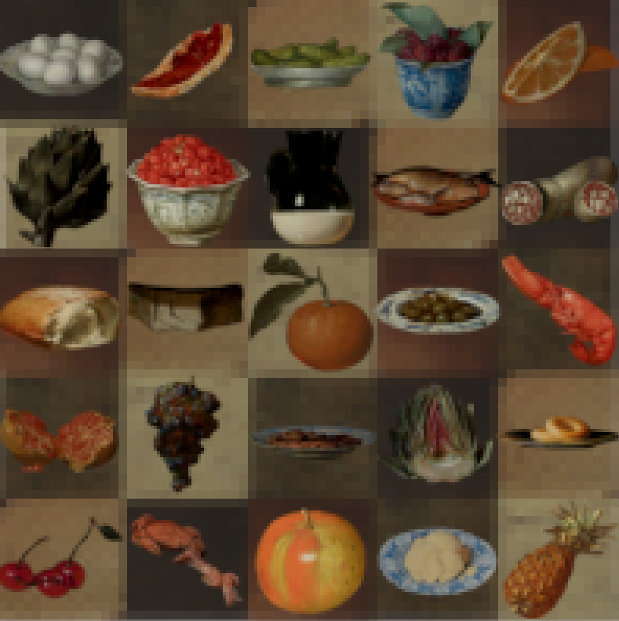
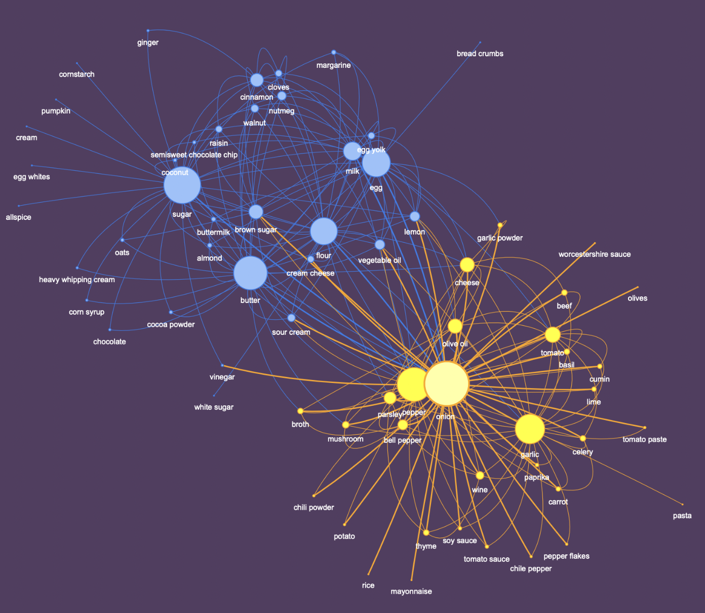

FoodBlocks — recipe-building Telegram bot
This bot makes ingredient suggestions based on compatibility with the input ingredient. The main goal here is to reduce food waste by encouraging the user to use the bot to create a recipe with seemingly useless food items rather than throwing them out.
All project resources are available in the GitHub repository and here is a brief step-by-step description of the process.
-
Scraped ingredient lists of 1.5k+ recipes from allrecipies.com using Python libraries Requests and BeautifulSoup.
import requests
from bs4 import BeautifulSoup -
With the SQLAlchemy library set up a SQLite-database of 11k+ ingredient pairs and the number of times they were used together, which is the main indicator of compatibility in this project.
-
Wrote a script for a Telegram bot using the Python library Telebot. The main functionality is suggesting pairings for the last ingredient provided.
import telebot
bot = telebot.TeleBot("Bot id here") -
Created a custom bot in Telegram via BotFather. Connected this bot to the code using a bot id.

-
Run the script and then started the bot in Telegram. The bot works while the script is running. The app should be deployed via any cloud service to make the bot fully functional.
-
Additionally customized the bot's profile picture, which is a pixel-ized collage of images of food from old still life paintings.

-
Bonus
The interactive version of this graph is here 
This video by Thu Wu inspired a small research of acquired data exploring ingredient connections using graphs. For this, I used the Python library NetworkX. What I found was there are some top-tier ingredients like onion, sugar, butter, pepper, egg, and garlic. Moreover, clusterization highlighted two large ingredient groups, which I interpreted as 'Savory' (yellow) and 'Sweet and Baking' (blue).